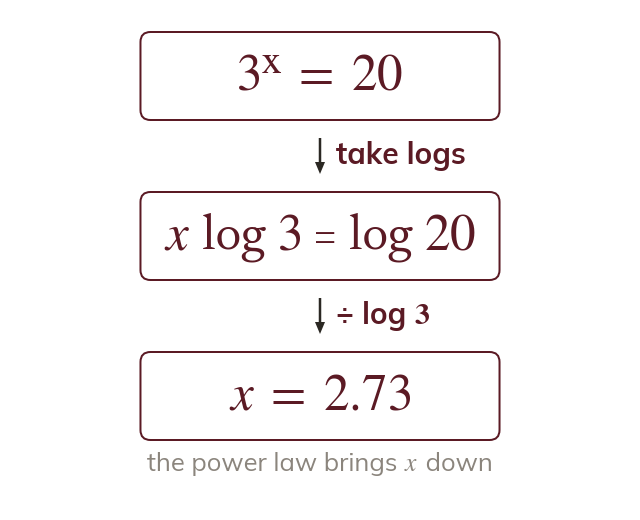
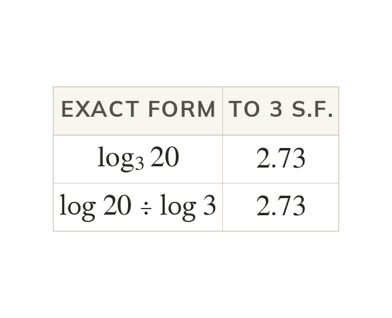
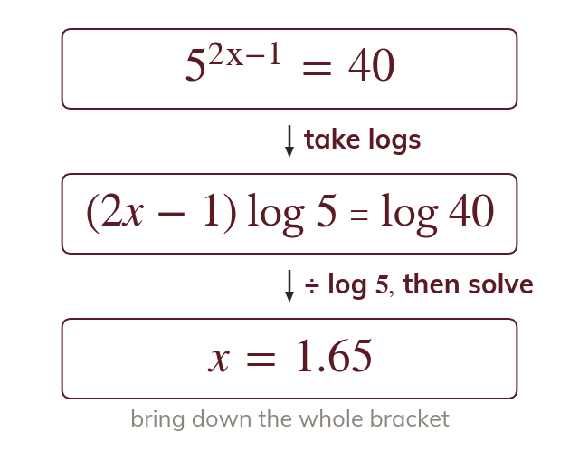
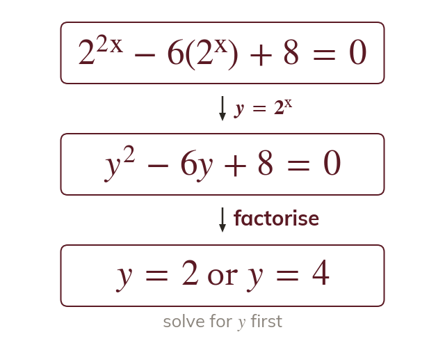
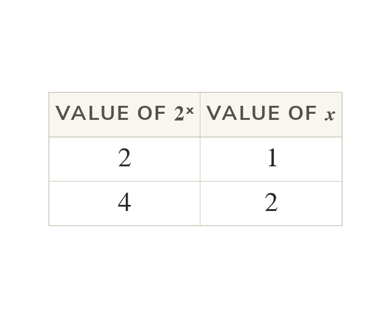
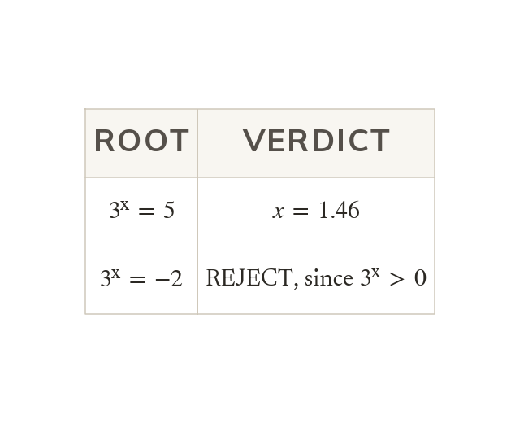

Take logarithms of both sides
To solve take logarithms of both sides and use the power law, log = log
Then divide by log to get = log ÷ log
Taking logarithms of both sides brings a power down, so an unknown in an index can be found. This answers growth and decay questions such as "when will it reach 1000?", and in the same idea with ln finds the time in a model based on e.
Work down the page at your own pace. Write every answer in your book first, then click to check it.
Read each card, then follow the worked examples one step at a time.

To solve take logarithms of both sides and use the power law, log = log
Then divide by log to get = log ÷ log

also means = log₃ so log₃ = log ÷ log
Any base works for taking logarithms, as long as both sides use the same one.

For the whole power comes down, log = log
Then solve the linear equation that is left.
Pick an answer. If it's wrong, the feedback tells you which mistake it was.
Write the blanks in your book first, then tap each one to check.
Read each card, then follow the worked examples one step at a time.

so is a quadratic in Writing gives

Each value of gives an equation in gives and gives

is positive for every x, so a root such as has no solution and is rejected. A positive root such as is solved with logarithms.
Pick an answer. If it's wrong, the feedback tells you which mistake it was.
Write the blanks in your book first, then tap each one to check.
Finished? Next lesson: 14.7 Working with Natural Logarithms.
For each skill, tap the one that is true for you today. Your Revise pages start with anything you mark Not yet.
Your ratings are saved on this device only.
Log in, then search for a code to practise that skill.